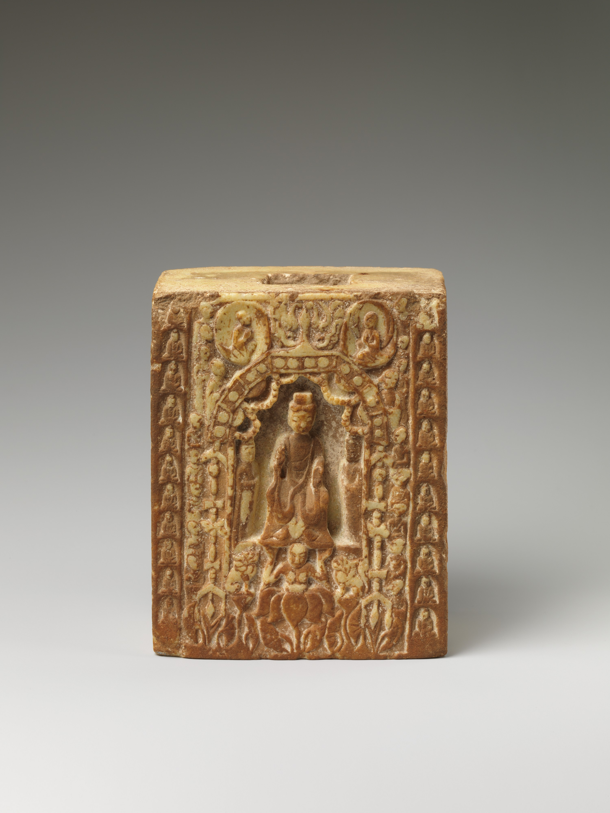

宋代花事极盛。文人士大夫以插花、挂画、焚香、点茶为"四般闲事"。花器从佛教供器走向书斋案头，形成了中国花器美学最精微的体系。
Zone 1
宋代文人书斋中，胆瓶是最常见的花器。长颈、鼓腹、小底，适合单枝梅花或兰花的清供。杨万里诗"胆样银瓶玉样梅"即咏此景。梅瓶小口短颈，原为酒器，因其口小仅容一枝瘦梅而得名。
天青釉色如"雨过天青云破处"，开片如冰裂蝉翼。存世极少，是宋人"以简驭繁"美学理想的具象化。
瓶身饰弦纹数道，器型端庄。紫口铁足，釉面有大开片。弦纹的节奏感与瓶身曲线形成了微妙的视觉韵律。
仿上古玉琮造型，方身圆口，以瓷仿玉。南宋龙泉粉青釉温润如玉，是宋人"尚古"精神的陶瓷表达。
Zone 2
宋代禅宗兴盛，寺院花器延续唐代军持传统，同时发展出新的器型。花觚仿商周青铜觚造型，大口、细腰、高圈足，用于佛前供花或大型插花。定窑、官窑均有烧造。
小口、细长颈，肩部带流。定窑白瓷纯净如雪，与佛前清供的精神诉求高度契合。
仿青铜觚造型，颈部修长，腰部收束，喇叭形圈足。釉面肥厚，大开片如冰裂，古雅沉静。
景德镇影青镂空香炉，炉盖可置鲜花。一器二用，是宋代禅院生活美学的日常表达。
Zone 3
宋代园林艺术发达，大型陶瓷花盆和花缸用于庭院布置。钧窑玫瑰紫釉花盆是徽宗"艮岳"的遗物，磁州窑白地黑花大鱼盆则更贴近民间生活。庭院花器的尺度与书斋花器的精微形成了有趣的对照。
钧窑以窑变著称，铜红釉在还原焰中呈现玫瑰紫、海棠红等变幻色彩。此类花盆底刻数字，为宫廷专用。
民间庭院用大盆，白地黑花写意画风。鱼藻纹舒展自由，与官窑的规整形成鲜明对比。
广口、斜壁、小底，形如斗笠。粉青厚釉，适合种植菖蒲等小型庭院植物，是宋人"以小见大"园林观的缩影。